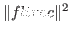
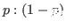
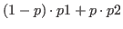
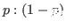
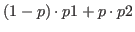

float-vectorは、要素が実数である1次元ベクトルである。
float-vectorは、どんなサイズでも良い。
resultが引き数リストで指定されているとき、
そのresultはfloat-vectorであるべきである。
float-vector &rest numbers [関数]
-
-
numbersを要素とするfloat-vectorを新しく作る。
(float-vector 1 2 3)と#F(1 2 3)の違いに注意すること。
前者は、呼ばれたときはいつでもベクトルが生成されるが、
後者は読み込まれたときのみ生成される。
float-vector-p obj [関数]
-
-
objがfloat-vectorであるならば、Tを返す。
v+ fltvec1 fltvec2 &optional result [関数]
-
-
2つのfloat-vectorを加える。
v- fltvec1 &optional fltvec2 result [関数]
-
-
2つのfloat-vectorを差し引く。もし、fltvec2が省略されているならば、
fltvec1の符号が反転される。
v. fltvec1 fltvec2 [関数]
-
- 2つのfloat-vectorの内積を計算する。
v* fltvec1 fltvec2 &optional result [関数]
-
-
2つのfloat-vectorの外積を計算する。
v.* fltvec1 fltvec2 fltvec3 [関数]
-
-
スカラー3重積を計算する。(v.* A B C)=(V. A (V* B C))=(V. (V* A B) C)
v fltvec1 fltvec2 [関数]
fltvec1 fltvec2 [関数]
-
-
もし、fltvec1の要素がfltvec2の対応する要素よりすべて小さいとき、
Tを返す。
v fltvec1 fltvec2 [関数]
fltvec1 fltvec2 [関数]
-
-
もし、fltvec1の要素がfltvec2の対応する要素よりすべて大きいとき、
Tを返す。
vmin &rest fltvec [関数]
-
-
fltvecの中のそれぞれの次元における最小値を捜し、
その値でfloat-vectorを新しく作る。vminとvmaxは、
頂点の座標から最小のminimal-boxを見つけるために使用される。
vmax &rest fltvec [関数]
-
-
fltvecの中のそれぞれの次元における最大値を捜し、
その値でfloat-vectorを新しく作る。
minimal-box v-list minvec maxvec [err] [関数]
-
-
与えられたv-listに対してminimal bounding boxを計算し、
その結果をminvecとmaxvecに蓄積する。
もし、実数errが指定されているならば、minimal boxはその比率によって
成長する。すなわち、もしerrが0.01のとき、minvecのそれぞれの
要素はminvecとmaxvecとの距離の1%減少する。
そして、maxvecのそれぞれの要素は1%増加する。
minimal-boxは、minvecとmaxvecとの距離を返す。
scale number fltvec &optional result [関数]
-
-
fltvecのすべての要素をスカラーnumber倍する。
norm fltvec [関数]
-
- fltvecのノルムを求める。

norm2 fltvec [関数]
-
- fltvecのノルムの２乗を求める。
=(v. fltvec fltvec)
normalize-vector fltvec &optional result [関数]
-
-
fltvecのノルムが1.0となるように正規化する。
distance fltvec1 fltvec2 [関数]
-
-
2つのfloat-vectorの距離を返す。

distance2 fltvec1 fltvec2 [関数]
-
-
2つのfloat-vectorの距離の2乗を返す。

homo2normal homovec &optional normalvec [関数]
-
-
同次ベクトルhomovecを正規表現に変換する。
homogenize normalvec &optional homovec [関数]
-
-
正規ベクトルnormalvecを同次表現に変換する。
midpoint p p1 p2 &optional result [関数]
-
-
pは実数で、p1,p2は同次元のfloat-vectorである。
p1
 p2をの比率で等分した点

を返す。
p2をの比率で等分した点

を返す。
rotate-vector fltvec theta axis &optional result [関数]
-
-
2次元あるいは3次元のfltvecをaxis回りにthetaラジアン
回転する。
axisは、:x, :y, :z, 0, 1, 2, または NILの内の一つである。
axisがNILのとき、fltvecは2次元として扱われる。
3次元空間の任意の軸の回りにベクトルを回転するためには、
rotation-matrixで回転行列を作り、そのベクトルにかければよい。
2016-03-23